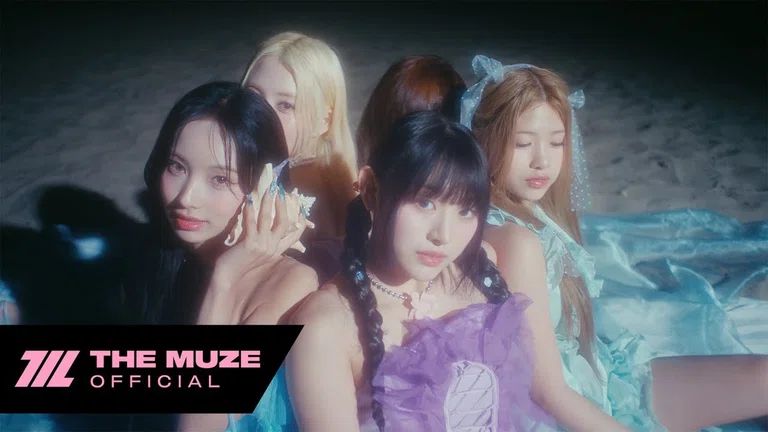
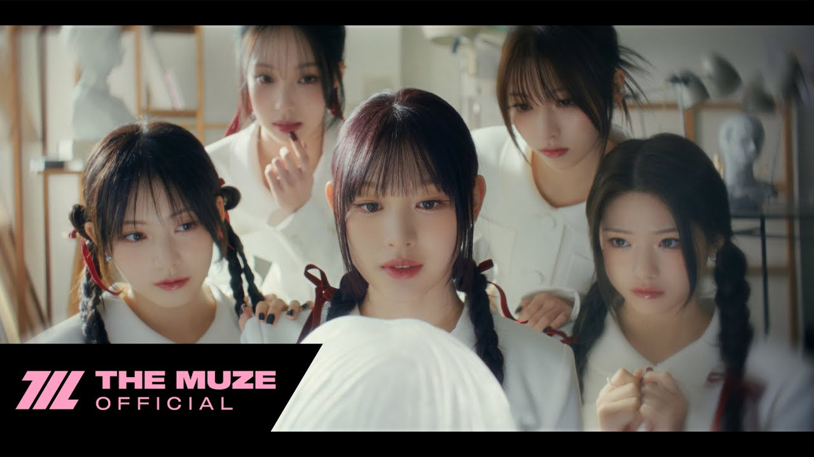
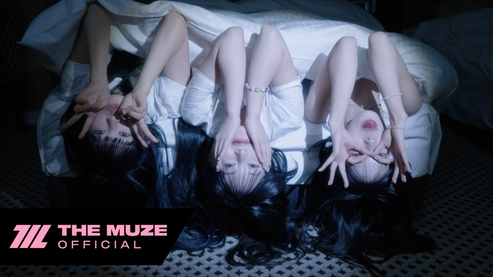
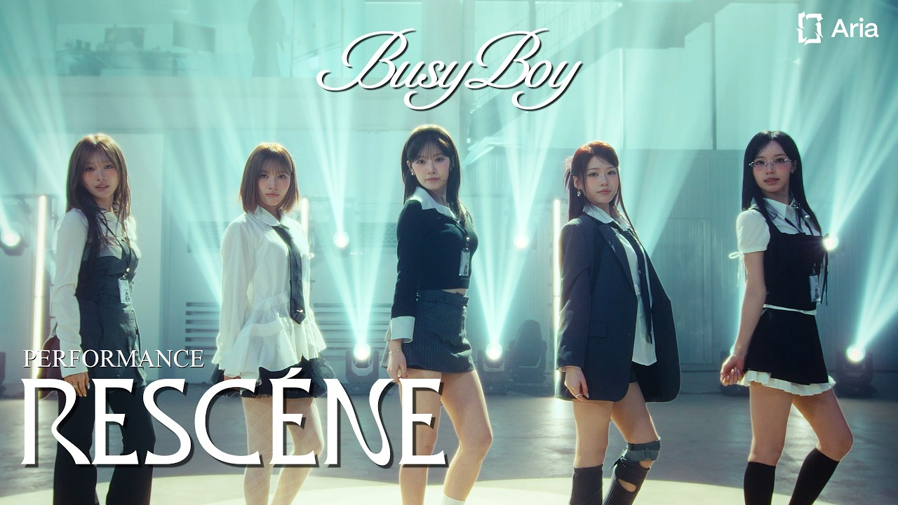
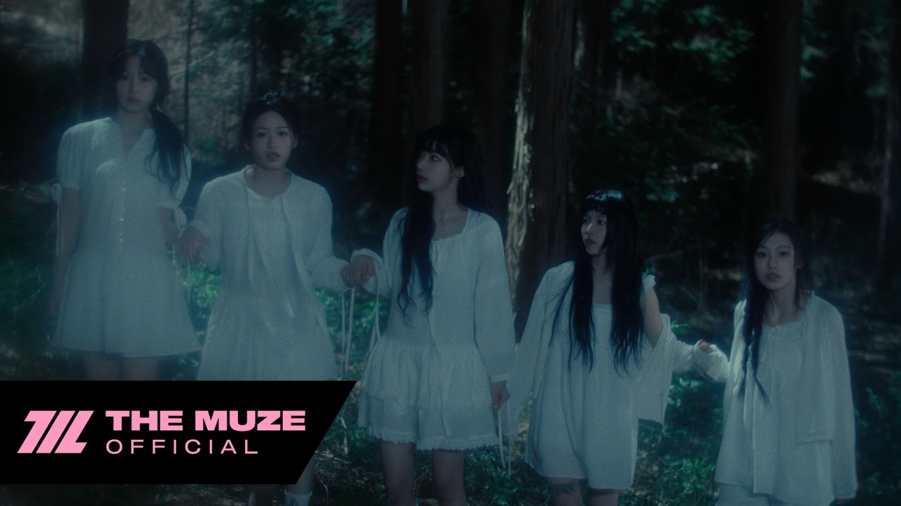
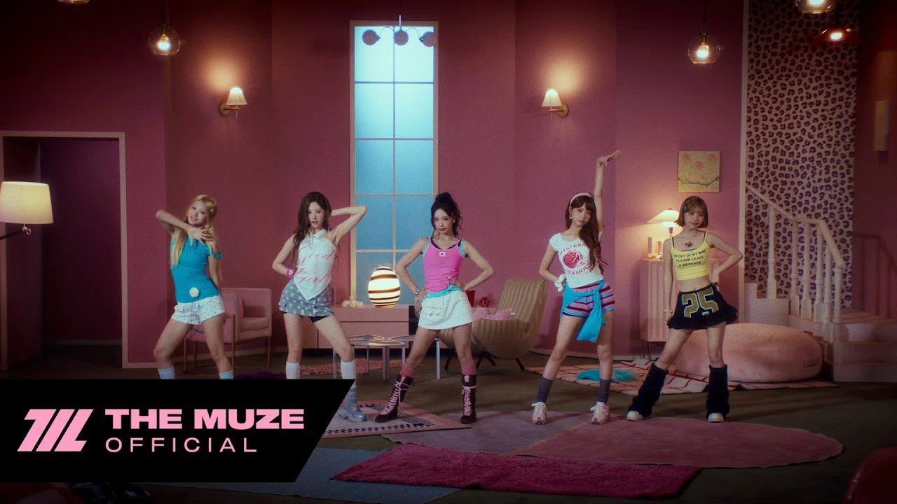

Melonチャート記録
発売日または日間最高順位で並び替えながら、TOP100最高順位・日間最高順位・MVを確認できます。
RELEASE ORDER
楽曲別チャート記録
01
- TOP100最高順位
- -
- 日間最高順位
- #683 獲得日
02
- TOP100最高順位
- -
- 日間最高順位
- #980 獲得日
03

- TOP100最高順位
- #1 獲得日
- 日間最高順位
- #1 獲得日
04
- TOP100最高順位
- #56 獲得日
- 日間最高順位
- #106 獲得日
05

- TOP100最高順位
- -
- 日間最高順位
- #250 獲得日
06

- TOP100最高順位
- #13 獲得日
- 日間最高順位
- #8 獲得日
07
- TOP100最高順位
- -
- 日間最高順位
- #575 獲得日
08
- TOP100最高順位
- -
- 日間最高順位
- #275 獲得日
09

- TOP100最高順位
- -
- 日間最高順位
- #301 獲得日
10

- TOP100最高順位
- #16 獲得日
- 日間最高順位
- #50 獲得日
11

- TOP100最高順位
- #4 獲得日
- 日間最高順位
- #6 獲得日